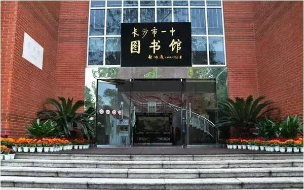

湖南省长沙市第一中学（The First High School of Changsha，Hunan）是湖南省教育厅直属中学，也是湖南省示范性普通高级中学、湖南省文明单位、教育部现代教育技术实验学校。 [1]
湖南省长沙市第一中学创办于1912年（中华民国元年），初名湖南全省公立高等中学堂；1914年，更名为湖南省立第一中学；1934年秋，学校改名为湖南省立长沙高级中学；1952年，学校更名为湖南省长沙市第一中学。
截至2012年9月，湖南省长沙市第一中学占地120亩，共有83个教学班，4000余名学生，教职工400余人。、

长沙一中